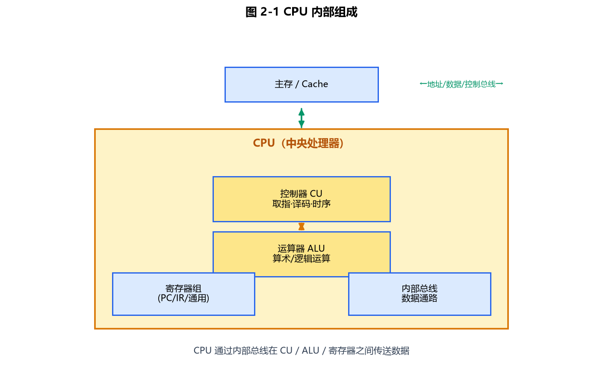
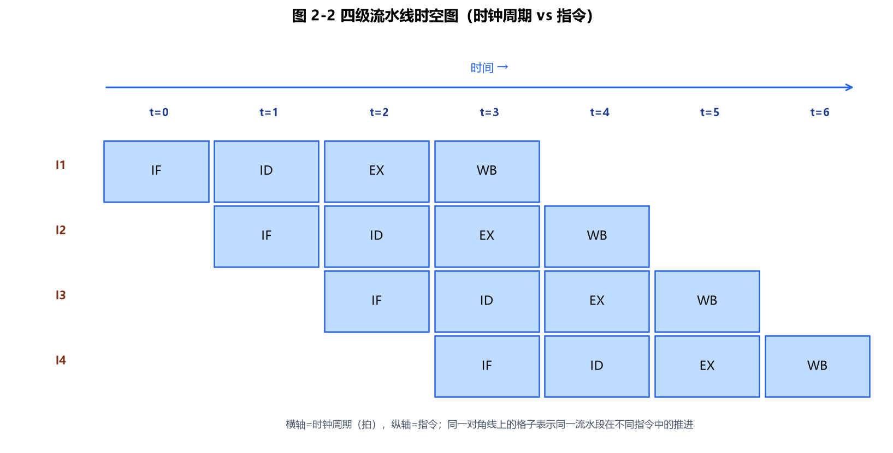
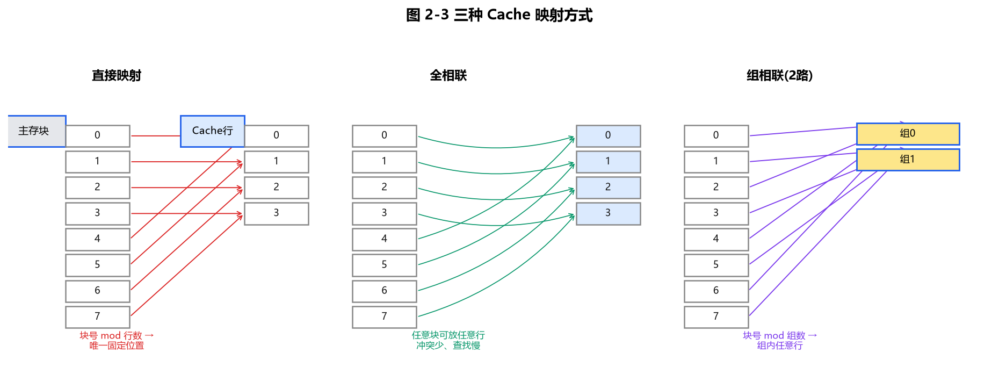

第2章 计算机体系基本结构
本章定位（CSP-S）：在 CSP-J "认识部件名称"的基础上，深入理解 CPU 如何一条条执行指令、指令如何找到操作数（寻址）、为什么要分存储层次与 Cache、Cache 怎么映射与算命中率、以及 中断/异常 如何让外设与 CPU 协作。初赛常考指令周期阶段、寻址方式辨析、Cache 命中率计算、流水线加速比；其中 Cache 与流水线是 CSP-S 相对 CSP-J 明确加深的考点。
2.1 CPU 组成与指令执行周期
2.1.1 CPU 的内部组成
CPU（中央处理器）主要包含：
- 运算器：ALU（算术逻辑单元）、累加器 ACC、状态/标志寄存器（存放进位、零、溢出等标志）。
- 控制器：PC（程序计数器，指向下一条指令地址）、IR（指令寄存器，存放当前指令）、指令译码器、时序与控制逻辑。
- 寄存器组：通用寄存器（如 R0~R15），访问速度远快于内存。
- 片内 Cache：CPU 自带的高速缓存（L1/L2/L3）。
易错点：PC 存放的是"下一条要执行"的指令地址，而不是"当前正在执行"的指令地址；当前指令在执行阶段被取到 IR 中。

图 2-1：CPU 由运算器 ALU、控制器 CU、寄存器组与片内 Cache 组成，通过内部总线互连。
2.1.2 一条指令的执行阶段（指令周期）
一条指令从取来到执行完，通常经历五个阶段：
- 取指 IF（Instruction Fetch）：按 PC 从内存取指令送入 IR，PC 自增。
- 译码 ID（Instruction Decode）：译码器分析操作码与操作数。
- 执行 EX（Execute）：ALU 完成运算（如加法、比较）。
- 访存 MEM（Memory Access）：需要读写内存时才进行（如 LOAD/STORE）。
- 写回 WB（Write Back）：把结果写回寄存器。
并非每条指令都经历全部五阶段：纯寄存器运算指令没有 MEM 阶段；跳转指令会改变 PC。
2.1.3 指令流水线（Pipeline）
把五阶段重叠起来：第 1 条指令进入 ID 时，第 2 条已进入 IF。理想情况下，一条指令出结果后，每个时钟周期都能"流出"一条结果，吞吐量大幅提升。
时间估算公式（无冒险理想情况）：
- 顺序（非流水）执行 n 条 k 级指令：耗时 ≈ n × k 个时间单位。
- 流水执行：耗时 ≈ k + (n − 1) 个时间单位（前 k 个周期"灌满"流水线，之后每周期出 1 条）。
- 加速比 ≈ n × k / (k + n − 1)，当 n 很大时趋近 k（即级数）。
示例：流水线加速比（C++17）
#include <iostream>
using namespace std;
int main() {
int k = 5; // 5 级流水（IF/ID/EX/MEM/WB）
int n = 100; // 100 条指令
long long noPipe = (long long)n * k; // 顺序执行总周期
long long pipe = (long long)k + (n - 1); // 流水执行总周期
cout << "非流水耗时: " << noPipe << "\n"; // 500
cout << "流水耗时: " << pipe << "\n"; // 104
cout << "加速比: " << (double)noPipe / pipe << "\n"; // 约 4.81
return 0;
}
结论：100 条 5 级指令，流水把耗时从 500 降到 104 周期，加速比约 4.8（接近级数 5）。实际中**数据相关、控制相关（分支）**会引入"气泡"使加速比低于理论值。

图 2-2：四级流水线时空图——横轴为时钟周期，纵轴为指令；理想情况下从第 k 拍后每拍完成一条指令。
2.2 指令系统与寻址方式
2.2.1 指令格式
一条机器指令通常由 操作码（做什么）+ 操作数（对谁做） 组成。操作数可来自寄存器、内存或指令本身。
2.2.2 常见寻址方式
| 寻址方式 | 有效地址 EA 的求法 | 特点 |
|---|---|---|
| 立即寻址 | 操作数就在指令中 | 最快，但操作数固定（如 MOV R1, 50） |
| 直接寻址 | EA = 指令中的地址码 | 只访问一次内存，地址范围受限 |
| 寄存器寻址 | 操作数在寄存器 Ri 中 | 速度快，不访存 |
| 寄存器间接寻址 | EA = (Ri)，即 Ri 的内容是地址 | 灵活，常用于指针 |
| 基址寻址 | EA = 基址寄存器 BR + 位移 disp | 便于程序浮动/重定位 |
| 变址寻址 | EA = 变址寄存器 IX + 位移 | 便于数组遍历（IX 自增） |
| 相对寻址 | EA = PC + 位移 disp | 用于转移指令、与位置无关代码 |
易错点：相对寻址的 PC 通常用"当前指令地址"还是"下一条指令地址"取决于体系，考试若未说明按题目约定；核心是 EA = PC + disp。
示例：各种寻址方式的有效地址（C++17）
#include <iostream>
using namespace std;
int main() {
int R1 = 200;
int mem[1024] = {0};
mem[200] = 999; // 假设 R1 间接指向的内存单元
// 立即寻址：操作数直接是 50
int imm = 50;
cout << "立即寻址: 操作数=" << imm << "\n";
// 直接寻址：EA = 100
int dir = 100;
cout << "直接寻址: EA=" << dir << "\n";
// 寄存器寻址：操作数就在 R1 中
int reg = R1;
cout << "寄存器寻址: R1=" << reg << "\n";
// 寄存器间接寻址：EA = (R1) = 200，操作数 = mem[200]
int EA = R1;
cout << "寄存器间接寻址: EA=" << EA << ", 操作数=" << mem[EA] << "\n";
// 基址寻址：EA = BR + disp
int BR = 100, disp = 200;
cout << "基址寻址: EA=" << (BR + disp) << "\n";
// 相对寻址：EA = PC + d
int PC = 1000, d = 20;
cout << "相对寻址: EA=" << (PC + d) << "\n";
return 0;
}
2.3 存储器层次结构
速度由快到慢、容量由小到大、成本由高到低（与第1章 1.7.2 呼应，这里聚焦"为什么需要 Cache"）：
寄存器 > L1 > L2 > L3 > 主存(RAM) > 辅存(SSD/HDD)
(最快) (约100ns) (约ms)
- Cache—主存层次：解决 CPU 与主存之间的速度差，依据是局部性原理（时间局部性、空间局部性）。
- 主存—辅存层次：解决容量差，即虚拟存储技术（第1章 1.8.3）。
核心矛盾：CPU 越来越快，主存访问相对越来越慢。Cache 把"最近/最可能用到"的数据放在靠近 CPU 的快速存储器中，从而把平均访存时间拉低。
2.4 高速缓存（Cache）映射方式与命中率
2.4.1 主存地址的划分
在 Cache 系统中，一个主存地址被切成三段（从左到右）：
[ 标记 tag ][ 行索引 index ][ 块内偏移 offset ]
- 块内偏移位数 = log₂(块大小)：一块内第几个字节。
- 行索引位数 = log₂(Cache 行数)：该块映射到 Cache 的第几行（组相联时是第几组）。
- 标记位数 = 主存地址总位数 − 行索引位数 − 块内偏移位数：用来确认"这一行装的是不是我要的主存块"。
示例（直接映射参数计算）：主存 1 MB（2²⁰ 字节），Cache 8 KB（2¹³ 字节），块大小 32 字节（2⁵）。
| 字段 | 计算 | 位数 |
|---|---|---|
| 块内偏移 offset | log₂(32) | 5 位 |
| 行索引 index | Cache 行数 = 8KB / 32B = 256 = 2⁸ | 8 位 |
| 标记 tag | 20 − 8 − 5 | 7 位 |
即一个 20 位主存地址被分为：7 位 tag + 8 位 index + 5 位 offset。
2.4.2 三种映射方式
| 映射方式 | 规则 | 优点 | 缺点 |
|---|---|---|---|
| 直接映射 | 主存块 i 固定映射到 Cache 行 (i mod 行数) | 硬件简单、查找快 | 冲突率高（不同块争同一行） |
| 全相联 | 主存块可放入任意 Cache 行 | 冲突率最低、命中率高 | 查找慢（需比对所有行） |
| 组相联 | Cache 分若干组，组内全相联，组间直接映射 | 折中（常用 2~8 路） | 实现适中 |

图 2-3：直接映射（按块号 mod 行数固定放置）、全相联（任意行）、组相联（按 mod 组数选组，组内任意行）的对比。
2.4.3 命中率计算
- 命中（hit）：要的数据已在 Cache，直接取用。
- 缺失（miss）：不在 Cache，需去主存取并装入。
- 命中率 = 命中次数 / 总访问次数；缺失率 = 1 − 命中率。
- 平均访存时间 ≈ 命中率 × Cache访问时间 + 缺失率 × 主存访问时间（忽略缺失时调度开销）。
示例：直接映射 Cache 命中率（C++17）
设 Cache 共 4 行，块大小不影响此处（以"块号"标识主存块），直接映射行号 = 块号 mod 4。访问块号序列：0, 1, 2, 3, 0, 1, 2, 3, 4, 5。
#include <iostream>
#include <vector>
using namespace std;
int main() {
const int ROWS = 4; // Cache 共 4 行
vector<int> tag(ROWS, -1); // 每行存的标记，-1 表示空
vector<int> access = {0,1,2,3,0,1,2,3,4,5};
long long hit = 0, total = 0;
for (int blk : access) {
int row = blk % ROWS; // 直接映射：行号 = 块号 mod 4
++total;
if (tag[row] == blk) ++hit; // 标记相同 → 命中
else tag[row] = blk; // 否则装入（缺失）
}
cout << "总访问=" << total << ", 命中=" << hit
<< ", 命中率=" << (double)hit / total << "\n"; // 命中率=0.4
return 0;
}
手算验证：前 4 次（0,1,2,3）全部缺失装入；接着 0,1,2,3 各命中一次（+4 命中）；块 4 → 行0（原标记 0≠4，缺失）；块 5 → 行1（原标记 1≠5，缺失）。总 10 次、命中 4 次，命中率 = 0.4。代码输出一致。
2.4.4 提高命中率的方向
- 增大 Cache 容量或相联度（减少冲突缺失）。
- 利用空间局部性：一次取一整块（block），而非 1 字节。
- 替换策略（全/组相联时）：常用 LRU（最近最少使用，第1章 1.8.3 已实现）。
2.5 中断与异常机制
2.5.1 基本概念
- 中断（Interrupt）：来自 CPU 外部的事件请求（如键盘敲击、时钟到时、磁盘完成），打断当前程序去处理。
- 异常（Exception / Trap）：指令执行过程中产生的内部事件（如除零、非法指令、缺页），也称"内中断"。
二者都通过中断向量表找到对应的处理程序（ISR / 异常处理例程）。
处理流程（典型）：保存现场（寄存器压栈）→ 查中断向量表 → 执行处理程序 → 恢复现场 → 返回原程序。
2.5.2 中断优先级
多个中断同时到达时，按优先级响应（高优先级可嵌套低优先级）。**DMA（直接存储器访问）**让外设不经 CPU 直接在内存间搬运数据，仅在开始/结束时发中断，从而减轻 CPU 负担（与第1章 1.7.4 呼应）。
示例：中断向量表分发（C++17）
#include <iostream>
#include <vector>
using namespace std;
int main() {
// 中断向量表：下标 = 中断号，值 = 处理函数编号
vector<int> ivt = {0, 1, 2, 3}; // 0:空 1:键盘 2:磁盘 3:时钟
int irq = 2; // 假设发生"磁盘完成"中断
cout << "中断号 " << irq
<< " -> 调用处理函数 #" << ivt[irq] << "\n";
// 实际硬件：关中断 -> 保存现场 -> 查 ivt[irq] -> 执行 ISR -> 恢复现场 -> 开中断
return 0;
}
竞赛提示：中断/异常在 CSP 初赛偏概念题（考"中断 vs 异常""DMA 作用""向量表"），复赛不直接考；但理解它有助于读懂"评测机如何计时/如何处理你的程序异常"等背景。
2.6 本章小结（CSP-S 考查要点）
- 指令周期：取指 IF → 译码 ID → 执行 EX → 访存 MEM → 写回 WB；PC 指向下一条、IR 存当前。
- 流水线：理想加速比 ≈ 级数 k（n 很大时）；实际受相关/分支影响低于理论。
- 寻址方式：立即 / 直接 / 寄存器 / 寄存器间接 / 基址 / 变址 / 相对，会算有效地址 EA。
- Cache：主存地址 = tag + index + offset；直接/全相联/组相联三者的冲突率与实现复杂度权衡。
- 命中率：命中率 = 命中次数 / 总访问次数；平均访存时间按命中/缺失加权。
- 中断 vs 异常：外中断 vs 内中断；向量表分发；DMA 减轻 CPU 负担。
随堂检测（CSP-S 风格）
提示：每道题下方都有「参考答案」折叠块，点击即可展开答案与解析。
-
（单选）以下不属于"指令执行周期"标准阶段的是（ ）
- A. 取指 IF
- B. 译码 ID
- C. 编译 Compile
- D. 写回 WB
参考答案
答案：C
解析（考点）：标准指令周期阶段为 取指 IF → 译码 ID → 执行 EX → 访存 MEM → 写回 WB。"编译"是运行前把高级语言翻译成机器码的过程，不属于 CPU 执行单条指令的阶段。
-
（单选）主存 1 MB、Cache 8 KB、块大小 32 字节，采用直接映射，主存地址中"标记 tag"占（ ）
- A. 5 位
- B. 7 位
- C. 8 位
- D. 20 位
参考答案
答案：B
解析（考点）：地址总位数 = 20（1 MB = 2²⁰）。块内偏移 = log₂(32) = 5 位；Cache 行数 = 8KB/32B = 256 = 2⁸ → 行索引 8 位；标记 = 20 − 8 − 5 = 7 位。
-
（单选）5 级流水线执行 100 条指令，理想情况下流水比顺序执行的加速比约为（ ）
- A. 1.0
- B. 2.0
- C. 4.8
- D. 100
参考答案
答案：C
解析（考点）：顺序耗时 = 100 × 5 = 500；流水耗时 = 5 + (100 − 1) = 104；加速比 = 500 / 104 ≈ 4.8，接近级数 5（n 越大越接近 k）。
-
（单选）相对寻址方式下，有效地址 EA 等于（ ）
- A. 寄存器内容
- B. 指令中的地址码
- C. PC + 位移 disp
- D. 基址寄存器 + 位移
参考答案
答案：C
解析（考点）：相对寻址 EA = PC + 位移 disp，常用于转移指令和与位置无关代码；A 是寄存器寻址，B 是直接寻址，D 是基址寻址。注意 PC 的基准（当前/下一条）按题目约定。
-
（多选）下列关于中断与异常的说法，正确的有（ ）
- A. 中断一般来自 CPU 外部，异常来自指令执行内部
- B. 处理中断需经中断向量表找到处理程序
- C. DMA 可让外设不经 CPU 直接在内存间搬运数据
- D. 异常只可能由程序员主动触发
参考答案
答案：A、B、C
解析（考点）：中断是外部事件（键盘、时钟、磁盘），异常是执行中的内部事件（除零、缺页、非法指令），都经向量表分发，A、B 正确；DMA 由外设直连内存、仅在起止发中断，减轻 CPU，C 正确；异常并非"只由程序员主动触发"（如除零是被动硬件事件），D 错。
-
（单选）直接映射 Cache 共 4 行，访问块号序列 0,1,2,3,0,1,2,3,4,5，命中率为（ ）
- A. 0.2
- B. 0.4
- C. 0.6
- D. 0.8
参考答案
答案：B
解析（考点）：行号 = 块号 mod 4。前 4 次全部缺失装入；接着 0,1,2,3 各命中一次（+4 命中）；块 4→行0（缺失）、块 5→行1（缺失）。共 10 次访问、命中 4 次，命中率 = 0.4。这正是 2.4.3 的代码输出。